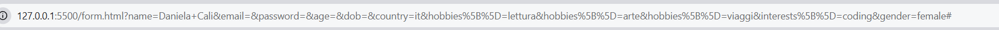
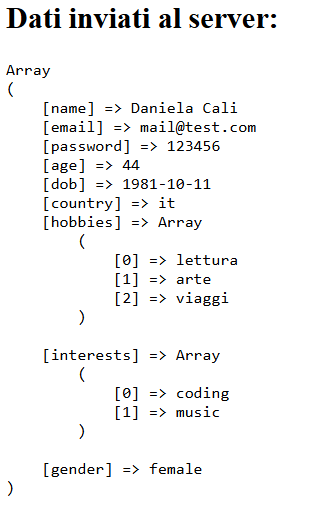

Torna alla home
Form in HTML
I form in HTML permettono di raccogliere dati dagli utenti attraverso vari tipi di input. Ecco un esempio di form con diversi campi:
L'utilizzo dei type permette di definire anche il contenuto dei vari input:
- text: campo di testo generico
- email: campo per indirizzi email con validazione
- password: campo per password che nasconde i caratteri
- number: campo per numeri con opzioni di min e max
- date: campo per selezionare una data
- submit: bottone per inviare il form
- reset: bottone per resettare i campi del form
Usarlo permette di effettuare una validazione di base lato client prima dell'invio del form.
Inoltre l'attributo required forza l'utente a compilare quel campo prima di poter inviare il form.
Il form permette di raccogliere dati dall'utente e inviarli al server alla pagina indicata nell'attributo action (usare # per ricaricare la pagina stessa del form) attraverso il metodo scelto con l'attributo method che può avere valore GET o POST:
- GET: i dati vengono inviati come parte dell'URL, visibili nella barra degli indirizzi. Adatto per dati non sensibili e richieste idempotenti.

- POST: i dati vengono inviati nel corpo della richiesta HTTP, non visibili nell'URL. Adatto per dati sensibili e operazioni che modificano lo stato del server.
